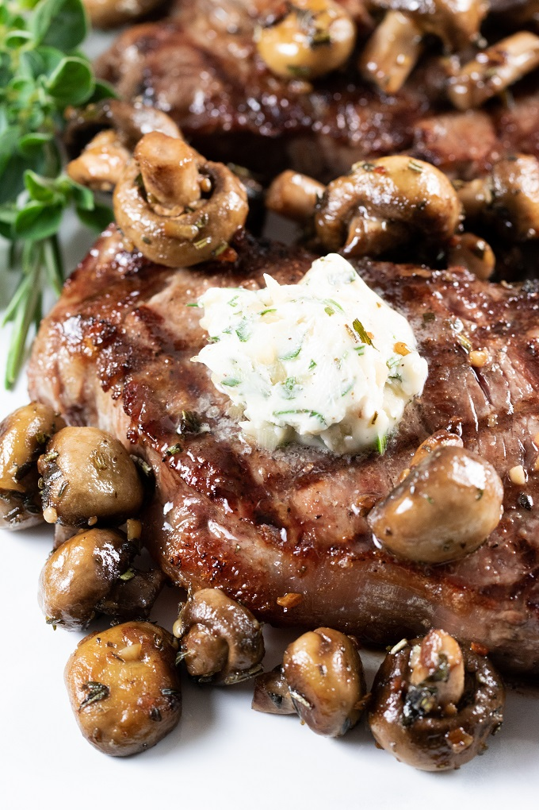

Ribeye with Bleu Cheese and Mushrooms

Description
This is a nice easy steak with mushrooms recipe, perfect for keto/ketovore, that adds flair with the garlic mushrooms.
Carnivores can omit garlic and mushrooms, and folks who eat more carbs can add a baked potato.
Ingredients
- Ribeye Steak
- Bleu Cheese, crumbled (you can also crumble your own)
- Mushrooms, button or shitake, sliced
- Garlic, 2 cloves, minced
- Butter, for cooking and sauteing
- Salt and Pepper to taste
- Herbs of choice for garnish - optional
Directions
- Heat pan on high until hot. Check with a sprinkle of water. It should sizzle and evaporate immediately.
- Salt and pepper steak, add butter to pan, then sear steak on all sides.
- Turn pan down to medium heat, cover, and cook to desired doneness, turning once.
Note: cook a couple minutes less than you think is needed if new to cooking steak. It will continue to cook while resting.
- Remove steak from pan, turn down heat, add more butter and the garlic. Saute for 1-2 minutes.
- Add mushrooms to garlic and cook until the juices evaporate.
- While mushrooms are cooking, crumble bleu cheese if needed.
- Center the steak on the plate, top with blue cheese, then pour garlic mushrooms over the steak.
- Garnish with herbs of choice, if using them.
Alternatives and Notes
Want even TASTIER steak? Try topping it with the Chunky Guacamole!.
While I use ribeye, any steak or cut will work. You can substitute the butter for a different cooking fat. Butter is just... YUM!!!
Back to home